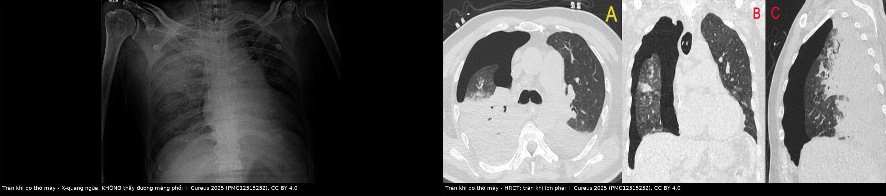
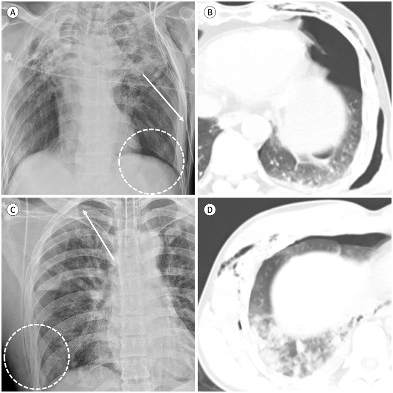
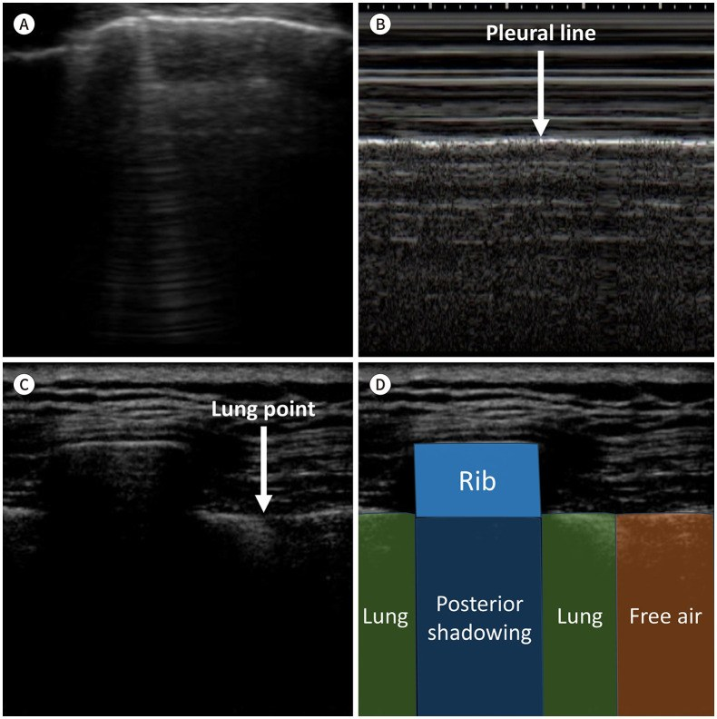

098 — Barotrauma & tràn khí màng phổi áp lực ở bệnh nhân thở máy: phim tại giường, siêu âm và ngưỡng chọc giải áp
Tags: pattern:tran-khi-mang-phoi pattern:tran-khi-trung-that pattern:khi-ngoai-phe-nang vung:phoi vung:mang-phoi vung:trung-that protocol:Xquang-tai-giuong protocol:sieu-am-phoi protocol:CT-lat-mong protocol:choc-giai-ap
Mức chắc chắn (certainty): tổng hợp y văn (literature synthesis) — ghép 204 bệnh nhân COVID-19 thở máy (J Clin Med 2026, PMC13164131), 334 bệnh nhân PJP không HIV (Front Med 2026, PMC13161121), 225 bệnh nhân ARDS với dấu Macklin (Diagnostics 2025, PMC12523701), 110 bệnh nhân ICU thở máy so siêu âm – X-quang – CT (Indian J Crit Care Med 2025, PMC12592945), tổng quan hình ảnh tràn khí/tràn máu màng phổi (J Korean Soc Radiol 2026, PMC13448134), meta-analysis 51 nghiên cứu chọc giải áp (World J Emerg Surg 2025, PMC12087068) và ca tràn khí sau đặt ống ở phổi đông đặc (Cureus 2025, PMC12515252). Không có ca do nhóm tự chụp.
Câu hỏi thực hành: nam 58 tuổi, ARDS do viêm phổi, đang thở máy PEEP 12 cmH₂O, đột ngột SpO₂ 88%, huyết áp tụt, áp lực đường thở tăng; X-quang tại giường “không thấy tràn khí”. Ba quyết định: (1) vì sao phim ngửa có thể âm tính giả; (2) siêu âm phổi tại giường trả lời gì trong 2 phút; (3) khi nào chọc giải áp ngay tại giường thay vì chuyển đi CT. Nối 041 – Tràn khí màng phổi, 061 – Tràn khí trung thất, 084 – Viêm phổi thở máy, 040 – Tràn dịch màng phổi.
1. Tổng quan bệnh học – cơ chế hình ảnh: vì sao áp lực dương làm rách phế nang và vì sao phim ngửa giấu tràn khí
- Định nghĩa: barotrauma phổi (pulmonary barotrauma) = khí ngoài phế nang (extra-alveolar air) xuất hiện do thông khí áp lực dương: tràn khí màng phổi, tràn khí trung thất, tràn khí dưới da, tràn khí phúc mạc, tràn khí màng tim, thuyên tắc khí. Đây là biến chứng của chính điều trị, không phải diễn tiến tự nhiên của bệnh phổi nền.
- TẠI SAO phế nang rách: khi áp lực xuyên phổi (transpulmonary pressure = P_alv − P_pleura) vượt sức bền của vách phế nang–mao mạch, khí thoát vào khoảng quanh phế quản–mạch (bronchovascular sheath) rồi đi theo dấu hiệu Macklin lên trung thất; từ trung thất khí có thể vỡ màng phổi trung thất → tràn khí màng phổi, hoặc xuống sau phúc mạc → tràn khí phúc mạc. Vì vậy tràn khí trung thất và tràn khí màng phổi do thở máy thường đi cùng nhau — thấy cái này phải tìm cái kia.
- Giá trị của dấu Macklin (khí dọc vỏ phế quản trên CT): trong 225 bệnh nhân ARDS, dấu Macklin có độ nhạy 44,6% / độ đặc hiệu 90,6% cho barotrauma; khi loại COVID-19, độ nhạy 34,7% / độ đặc hiệu 93,6% (PMC12523701). Nghĩa là: thấy Macklin = báo động đỏ (đặc hiệu cao), không thấy không loại trừ (độ nhạy thấp).
- Tần suất – con số thực: 22,5% (46/204) bệnh nhân COVID-19 thở máy tại một ICU (PMC13164131); 12,0% (40/334) ở PJP không HIV, trong đó 23 tràn khí màng phổi và 17 chỉ tràn khí dưới da/trung thất (PMC13161121); y văn chung ghi 9–33% tùy quần thể (dẫn trong PMC13164131).
- Hậu quả định lượng: nhóm barotrauma có tử vong ICU 67,4% vs 32,6% (p = 0,009) và nằm ICU 17,07 ± 10,53 vs 12,34 ± 7,26 ngày (p = 0,006) (PMC13164131). Ở PJP không HIV, barotrauma đi kèm tử vong 72,5% vs 23,8%, thở máy xâm nhập 75,0% vs 20,7% (PMC13161121) — nhưng đây là liên quan, không chứng minh nhân quả.
- Yếu tố nguy cơ có số: PEEP tuần thứ 2 cao hơn (11 vs 10 cmH₂O, p = 0,024), ARDS mức độ trung bình (OR 3,52; KTC 1,01–12,30), thời gian thở máy dài; nghịch lý là CRP thấp hơn (OR hiệu chỉnh 0,90 mỗi mg/dL; 0,81–0,99) (PMC13164131). Ở PJP không HIV, PaO₂/FiO₂ lúc nhập viện là yếu tố dự báo độc lập: OR 0,993 (0,989–0,998) mỗi mmHg, mô hình AUC 0,751 (PMC13161121).
- TẠI SAO tràn khí áp lực (tension pneumothorax) là sốc, không chỉ là thiếu oxy: cơ chế van một chiều làm áp lực khoang màng phổi tăng dần → đẩy trung thất sang bên đối diện, ép tĩnh mạch chủ → giảm hồi lưu tĩnh mạch → sốc tắc nghẽn, cộng thêm xẹp phổi. Vì vậy tụt huyết áp + tăng áp lực đường thở ở bệnh nhân thở máy là dấu hiệu nguy hiểm hơn cả mức SpO₂.
- TẠI SAO phim ngửa âm tính giả: bệnh nhân nằm ngửa, khí tích ở phần trước–dưới của khoang màng phổi, không lên đỉnh phổi; dấu hiệu duy nhất có thể là dấu rãnh sâu (deep sulcus sign) — góc sườn–hoành sâu bất thường, hoặc một bên ngực tăng sáng. Gộp y văn: phim ngửa độ nhạy 0,46–0,54, độ đặc hiệu 0,99–1,00 (PMC13448134) — rất khó loại trừ, rất khó dương tính giả.
- Siêu âm phổi tại giường vượt phim ngửa: trong 110 bệnh nhân ICU thở máy được chụp CT làm chuẩn, siêu âm phổi phát hiện tràn khí với độ nhạy 100% / độ đặc hiệu 97%, còn X-quang tại giường chỉ độ nhạy 66,7% (PMC12592945). Ba dấu siêu âm cần thuộc: mất trượt màng phổi (absent lung sliding), mất B-line, và điểm phổi (lung point) — vùng chuyển tiếp có trượt ↔ không trượt, đặc hiệu rất cao (PMC13448134).
2. Mẫu hình + chẩn đoán phân biệt theo vị trí khí ngoài phế nang (Gamut)
- Khí trong khoang màng phổi:
- Tràn khí đơn thuần do barotrauma: đường màng phổi tạng + mất tuần hoàn phổi ngoại vi; lượng khí ít có thể chỉ thấy trên CT.
- Tràn khí áp lực: thêm lệch trung thất, hạ cơ hoành, giãn khoang sườn, chèn ép phổi đối diện (PMC13448134) — chẩn đoán lâm sàng, không chờ hình ảnh.
- Tràn khí + tràn máu: sau thủ thuật mạch máu trung tâm/ECMO; mức dịch–khí, cần tìm nguồn chảy máu.
- Rò khí dai dẳng sau đặt ống dẫn lưu: nghĩ tổn thương phế quản lớn hoặc rò phế quản–màng phổi, không phải “tràn khí khó điều trị”.
- Khí trong trung thất (pneumomediastinum): dấu Macklin do thở máy; vỡ thực quản (Boerhaave — khí + dịch màng phổi trái + tràn khí dưới da, đau ngực sau nôn); vỡ khí quản sau đặt ống (tràn khí dưới da cổ, khí quanh khí quản, thường kèm tràn khí màng phổi); nhiễm khuẩn sinh khí trung thất (khí + dịch + sốc nhiễm khuẩn).
- Khí dưới da: từ trung thất lan lên cổ/mặt, hoặc từ vết mổ, catheter, chấn thương — không tự gây suy hô hấp, nhưng là dấu chỉ điểm phải tìm tổn thương nguồn.
- Khí trong ổ bụng: barotrauma (khí đi sau phúc mạc) vs thủng tạng rỗng; barotrauma thường không có phản ứng phúc mạc, khí có thể dọc mạc treo, nhưng trên phim tại giường không phân biệt được chắc chắn → cần CT có cản quang đường tiêu hóa khi bệnh nhân cho phép.
- Gợi nhớ PEEP: Pneumothorax (tràn khí màng phổi) · Extra-alveolar air in mediastinum (Macklin) · Esophageal/tracheal rupture (vỡ thực quản/khí quản) · Pneumoperitoneum (tràn khí phúc mạc).
3. Bảng so sánh phân biệt (ma trận đối chiếu)
| Thực thể (entity) | Hình ảnh điển hình | Chốt vào (rule-in) | Chốt loại (rule-out) | Gợi ý xác nhận |
|---|---|---|---|---|
| Tràn khí áp lực do thở máy | Phim ngửa: một bên ngực tăng sáng, rãnh sâu, lệch trung thất; CT: khí nhiều + xẹp phổi + đẩy trung thất | Tụt huyết áp + tăng áp lực đường thở + mất trượt màng phổi toàn bộ một bên → chọc giải áp ngay | Có trượt màng phổi lan tỏa + B-line ở vùng đáng ngờ → gần như loại tràn khí | Siêu âm 4–6 vùng/2 bên; dấu lung point; không chờ CT nếu huyết động xấu |
| Tràn khí không áp lực (kể cả occult) | CT: khí màng phổi < 1,0–3,5 cm lớp khí ly tâm; phim ngửa có thể hoàn toàn bình thường | CT thấy khí màng phổi; phim ngửa có rãnh sâu hoặc khí dưới da/ gãy sườn đi kèm | Phim ngửa bình thường KHÔNG loại trừ (Se 0,46–0,54) | Siêu âm tại giường; CT khi cần quyết định dẫn lưu |
| Tràn khí trung thất do Macklin | Khí dọc vỏ phế quản–mạch, quanh khí quản, dải khí sau xương ức; có thể kèm tràn khí dưới da | Khí dọc bronchovascular sheath trên CT lát mỏng | Khí chỉ trong nhu mô/ hang không phải trung thất | CT lát mỏng; đặc hiệu 90,6% cho barotrauma (PMC12523701) |
| Vỡ thực quản (Boerhaave) | Trung thất khí + dịch màng phổi trái, tràn khí dưới da; CT có thuốc cản quang thoát ra ngoài lòng | Thoát cản quang thực quản hoặc khí + dịch trung thất sau nôn | Khí trung thất đơn thuần không dịch, không nhiễm trùng → Macklin | CT có uống cản quang tan trong nước; nội soi khi nghi |
| Vỡ khí quản/phế quản lớn sau đặt ống | Khí quanh khí quản, tràn khí màng phổi một bên + rò khí dai dẳng sau đặt ống dẫn lưu | Rò khí > 24–48 giờ dù đã dẫn lưu + khí trung thất | Tràn khí hết sau 1 lần dẫn lưu → barotrauma đơn thuần | Nội soi phế quản ống mềm; CT lát mỏng |
| Tràn khí phúc mạc do barotrauma | Khí tự do dưới cơ hoành không có dịch, bệnh nhân không đau bụng, không phản ứng phúc mạc | Khí tự do sau đợt tăng áp lực đường thở, không ổ nhiễm | Khí + dịch + phản ứng phúc mạc → thủng tạng rỗng | CT bụng có cản quang; theo dõi sát, không mổ ngay vì “khí dưới hoành” đơn thuần |

Trái: phim ngửa tại giường — không thấy đường màng phổi, chỉ có đông đặc nền; phải: HRCT cùng bệnh nhân — tràn khí lớn bên phải với xẹp phổi. Đây là bẫy “phim âm tính” điển hình ở bệnh nhân thở máy. Nguồn: Cureus 2025 (PMC12515252), CC BY 4.0; ảnh ghép letterbox.Ba dấu hiệu đọc phim ngửa và siêu âm (chốt thực hành)
- Dấu rãnh sâu (deep sulcus sign): góc sườn–hoành sâu, tối hơn bên đối diện, do khí tụ ở phần trước–dưới. Nhìn cả hai bên và so với phim cũ; đây là dấu duy nhất trên phim ngửa ở nhiều ca.
- Điểm phổi (lung point): trên siêu âm, chỗ trượt màng phổi chuyển sang không trượt theo nhịp thở; đặc hiệu rất cao cho tràn khí và còn ước lượng lượng khí theo vị trí: điểm phổi ở thành ngực trước = ít, bên = trung bình, sau = nhiều / không còn điểm phổi kèm mất trượt hoàn toàn (PMC13448134).
- Barcode/stratosphere thay cho seashore: trên M-mode, mất chuyển động màng phổi tạo các vạch ngang song song (“mã vạch”), thay cho hình “bờ biển” bình thường (PMC12515252).
4. Protocol chụp + phân độ + ngưỡng can thiệp
- Bệnh nhân thở máy xấu đột ngột — thứ tự tại giường: (1) siêu âm phổi 2 bên, 6 vùng (trước–bên, trên–dưới) tìm mất trượt, mất B-line, lung point; (2) phim ngửa tại giường nếu chưa có siêu âm; (3) CT ngực lát mỏng khi huyết động ổn và cần phân biệt tràn khí kín/trung thất/tổn thương phế quản, hoặc trước can thiệp lớn.
- Phân lượng tràn khí có ngưỡng (theo báo cáo cấu trúc 2026, PMC13448134):
- Phim thẳng đứng: nhỏ khi khoảng cách màng phổi–thành ngực < 2,0 cm tại rốn phổi; trung bình–lớn khi ≥ 2,0 cm.
- CT: nhỏ < 1,0 cm**, trung bình **1,0–3,5 cm**, lớn **> 3,5 cm (khoảng ly tâm tối đa tại ổ khí lớn nhất).
- Siêu âm: theo vị trí lung point (trước/bên/sau) như trên.
- Chọc giải áp (needle decompression) — con số quyết định:
- Gộp 51 nghiên cứu, dữ liệu hình ảnh 24 nghiên cứu / 8.046 ca: tỷ lệ thất bại chọc vào khoang màng phổi 32,84% (I² 99,72%) (PMC12087068). Đây là lý do không được coi “đã chọc” là “đã giải quyết”.
- Kim dài hơn 1 cm giảm thất bại 7,76%; khuyến nghị kim 7 cm, chọc khoang sườn 5 đường nách giữa hoặc khoang sườn 2 đường giữa đòn cho bên phải; bên trái ưu tiên khoang sườn 2 đường giữa đòn vì nguy cơ tổn thương tim khi chọc thấp (PMC12087068).
- Thành ngực mỏng hơn ở đường nách (5AAL/5MAL) so với 2MCL, nhưng tổn thương mạch máu cao hơn ở 5AAL; tương quan chiều dài kim–tổn thương 0,88–0,91 (PMC12087068).
- Sau chọc giải áp: đặt ống dẫn lưu màng phổi và kiểm tra bằng phim/ siêu âm; không hút quá mức ở phổi xẹp lâu (nguy cơ phù phổi tái nở).
- Chiến lược thở máy: giảm thể tích khí lưu thông, PEEP và áp lực cao nguyên khi có thể; tuy nhiên chiến lược giới hạn áp lực đẩy (driving pressure–limited) không làm giảm tử vong so với thông khí bảo vệ phổi thường quy trong meta-analysis 4 RCT/465 ca (OR 1,01; 0,49–2,10) (PMC12676841) — driving pressure là chỉ số tiên lượng, không phải “đích điều trị thần kỳ”.
- Theo dõi sau can thiệp: tìm rò khí dai dẳng, tràn khí tái phát, viêm phổi thở máy đi kèm; ở PJP/ARDS, barotrauma làm kéo dài ICU và tăng tử vong nên phải tính vào tiên lượng (PMC13161121, PMC13164131).
flowchart TD
A[Bệnh nhân thở máy đột ngột xấu: SpO2 giảm, HA tụt, áp lực đường thở tăng] --> B[Siêu âm phổi tại giường 2 bên]
B --> C{Có trượt màng phổi + B-line lan tỏa?}
C -->|Có| D[Ít khả năng tràn khí: tìm nguyên nhân khác: ống lệch, tắc, ARDS nặng]
C -->|Không| E{Có lung point hoặc mất trượt toàn bộ một bên?}
E -->|Có| F{Huyết động không ổn định?}
F -->|Có| G[Chọc giải áp ngay tại giường: kim 7 cm, ICS 2 giữa đòn hoặc ICS 5 nách giữa] --> H[Đặt ống dẫn lưu + kiểm tra lại]
F -->|Không| I[Phim ngửa tại giường + CT lát mỏng nếu ổn định] --> J[Đặt ống dẫn lưu theo lượng khí và triệu chứng]
E -->|Không rõ| I
5. Biến thể bình thường và cạm bẫy
- Nếp da (skin fold) giả đường màng phổi: trên phim ngửa, nếp da tạo đường sáng mờ vượt ra ngoài lồng ngực và còn mạch máu phổi phía ngoài; tràn khí thật có mất tuần hoàn ngoại vi (PMC13448134).
- Xẹp phổi nằm (dependent atelectasis) giả tràn khí: vùng đáy phổi mờ, không có đường màng phổi rõ; đổi tư thế/ chụp lại giúp phân biệt.
- Siêu âm: bóng sườn và mất trượt giả: mất trượt khu trú đúng dưới bóng sườn không phải tràn khí; phải thấy mất trượt + mất B-line ở nhiều nhịp thở và tìm lung point.
- Bẫy “bão hòa tìm kiếm”: đã thấy tràn khí một bên thì vẫn phải tìm trung thất, màng tim, bên đối diện và ổ bụng — barotrauma thường nhiều ổ khí cùng lúc.
- Bẫy “khí dưới hoành = thủng tạng rỗng”: ở bệnh nhân thở máy, khí tự do có thể từ barotrauma; mổ ngay khi không có phản ứng phúc mạc/ dịch có thể sai. Ngược lại, khí + dịch + sốc thì phải mổ.
- Bẫy sau đặt ống dẫn lưu: ống nằm trong nhu mô/ ngoài màng phổi, hoặc rò khí dai dẳng do tổn thương phế quản — kiểm tra vị trí ống và nội soi khi nghi.
- Barotrauma không chỉ là tràn khí: thuyên tắc khí (đặc biệt khi có catheter tĩnh mạch trung tâm/ ECMO) và tràn khí màng tim có thể là nguyên nhân tử vong nhanh hơn cả tràn khí màng phổi.
6. Tự lượng giá — Blind Quiz
Ca 1 — Nam 58 tuổi, ARDS, thở máy PEEP 12, tụt SpO₂ và huyết áp; phim ngửa tại giường “không thấy tràn khí”. Nhìn ảnh trước, mô tả trước.
- Gợi ý lâm sàng: thở máy áp lực dương, phổi đông đặc nền, xấu đột ngột.
- Câu hỏi: Phim ngửa có loại trừ tràn khí được không? Trên CT, dấu hiệu nào chốt? Hai việc phải làm ngay tại giường?
Bấm để hiện đáp án (findings + chẩn đoán)
- Dấu hiệu: phim ngửa không có đường màng phổi rõ, chỉ đông đặc nền phải; HRCT (A–C) tràn khí lớn bên phải, phổi phải xẹp gần hoàn toàn, đông đặc/ xẹp phổi nền.
- Chẩn đoán: tràn khí màng phổi do thở máy (barotrauma), có nguy cơ áp lực — phim ngửa âm tính không loại trừ (Se 0,46–0,54; PMC13448134).
- Việc phải làm: siêu âm phổi tìm lung point/ mất trượt, và nếu huyết động xấu → chọc giải áp tại giường rồi đặt ống dẫn lưu, không chờ CT.
- Nguồn ảnh: Cureus 2025 (PMC12515252), CC BY 4.0.
Ca 2 — Bệnh nhân chấn thương ngực, phim ngửa tại giường. Tìm dấu hiệu bất thường trước khi đọc đáp án.

- Gợi ý lâm sàng: chấn thương tốc độ cao, đau ngực, khó thở; bệnh nhân nằm ngửa.
- Câu hỏi: Dấu hiệu ở góc sườn–hoành bên trái là gì? Nó thay đổi cách đọc phim ngửa ra sao?
Bấm để hiện đáp án (findings + chẩn đoán)
- Dấu hiệu: (A) dấu rãnh sâu (deep sulcus sign) — góc sườn–hoành trái sâu bất thường (vòng đứt nét) + tràn khí dưới da thành ngực bên trái (mũi tên); (B) CT tương ứng xác nhận tràn khí màng phổi + khí dưới da. (C) bệnh nhân khác: đường màng phổi mờ ở đỉnh phổi phải + khí dọc thành ngực dưới (vòng đứt nét); (D) CT xác nhận tràn khí + đông dập phổi.
- Chẩn đoán: tràn khí màng phổi kín trên phim ngửa — dấu rãnh sâu là chốt; tràn khí dưới da và gãy sườn là dấu phụ làm tăng độ tin cậy.
- Phản biện: hai bệnh nhân này chấn thương, không thở máy; nguyên lý đọc phim ngửa giống nhau, nhưng ở bệnh nhân thở máy phải hạ ngưỡng nghi ngờ vì khí tăng dần dưới áp lực.
- Nguồn ảnh: J Korean Soc Radiol 2026 (PMC13448134), CC BY-NC 4.0.
Ca 3 — Siêu âm phổi tại giường ở bệnh nhân nghi tràn khí. Panel nào bình thường, panel nào tràn khí?

- Gợi ý lâm sàng: bệnh nhân khó thở cấp, đang thở máy; đầu dò đặt thành ngực trước.
- Câu hỏi: Mô tả A–D; dấu nào đặc hiệu nhất cho tràn khí và vì sao?
Bấm để hiện đáp án (findings + chẩn đoán)
- Dấu hiệu: (A) B-line — các vạch tăng âm thẳng đứng từ đường màng phổi xuống đáy ảnh (phổi bình thường/ phù kẽ); (B) M-mode phổi bình thường = dấu bờ biển (seashore), phần dưới màng phổi có hạt “cát”; (C) điểm phổi (lung point) — chỗ chuyển từ có trượt sang không trượt; (D) sơ đồ: phổi – bóng sườn – khí tự do.
- Chẩn đoán: tràn khí màng phổi khi mất trượt + mất B-line, và lung point là dấu đặc hiệu nhất; vị trí lung point còn giúp ước lượng lượng khí (trước = ít, sau = nhiều).
- Nguồn ảnh: J Korean Soc Radiol 2026 (PMC13448134), CC BY-NC 4.0; panel C–D phỏng theo tài liệu bài giảng được bài gốc dẫn nguồn.
Bài liên quan chéo
- 001 – Tổng quan hệ Ngực
- 041 – Tràn khí màng phổi
- 061 – Tràn khí trung thất
- 040 – Tràn dịch màng phổi
- 080 – Chấn thương ngực
- 084 – Viêm phổi thở máy
- 088 – Áp-xe phổi/ mủ màng phổi sau VAP
Ảnh
098_barotrauma_XR-deep-sulcus_PMC13448134-F1.jpg,098_barotrauma_US-lung-point_PMC13448134-F2.jpg— J Korean Soc Radiol 2026 (PMC13448134), CC BY-NC 4.0, nguyên bản.098_barotrauma_XR-an_PMC12515252-F1.jpg,098_barotrauma_CT-tension_PMC12515252-F2.jpg— Cureus 2025 (PMC12515252), CC BY 4.0, nguyên bản.composite_an-tren-xq-vs-ct.jpg— ghép từ hai ảnh Cureus trên (cùng bệnh nhân), letterbox, giữ tỷ lệ.- Nguồn + giấy phép từng ảnh:
images/CREDITS.md.
Không dùng để chẩn đoán độc lập khi chưa có người hướng dẫn.